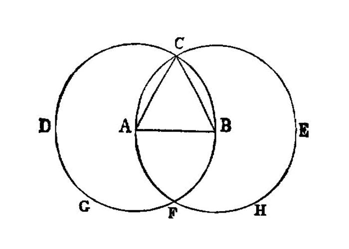

construct an equilateral triangle on a segment
{kind=link}
On a given finite straight line to construct an equilateral triangle.
—Euclid
From the given points \(A\) and \(B\) construct segment \(\overline{AB}\).
PROBLEM: construct an equilateral triangle on the segment AB.
Construct circle \((A, B)\) as \(c_1\)
Construct circle \((B, A)\) as \(c_2\)
Todo
define intersection point
Identify the two intersection points of the two circles as C and D
and from the point C 4, in which the circles cut one another, to the points A, B
let the segments CA, CB be joined. [I.post.1]
Now, since the point A is the centre of the circle CDB, - AC is equal to AB. [I.def.15]
Again, since the point B is the centre of the circle CAE, - BC is equal to BA. [I.def.15]
But CA was also proved equal to AB; therefore each of the straight lines CA, CB is equal to AB.
And things which are equal to the same thing are also equal to one another; 01.cn.01
therefore CA is also equal to CB.
Therefore the three straight lines CA, AB, BC are equal to one another. 5
Therefore the triangle ABC is equilateral; and it has been constructed on the given finite straight line AB.
(Being) what it was required to do.
dependencies
[I.def.15]: /elem.1.def.15 “Book I - Definition 15” [I.post.1]: /elem.1.post.1 “Book I - Postulate 1” [I.post.3]: /elem.1.post.3 “Book I - Postulate 3” [I.c.n.1]: /elem.1.c.n.1 “Book I - Common Notion 1”
- references
footnotes
- 2
Let AB be the given finite straight line.
To be strictly literal we should have to translate in the reverse order <quote>let the given finite straight line be the (straight line) AB </quote> ; but this order is inconvenient in other cases where there is more than one datum, e.g. in the <em>setting-out</em> of <a href=”/elem.1.2”>I. 2</a>, <quote>let the given point be A, and the given straight line BC,</quote> the awkwardness arising from the omission of the verb in the second clause. Hence I have, for clearness’ sake, adopted the other order throughout the book.
- 3
let the circle BCD be described.
Two things are here to be quoted,
the elegant and practically universal use of the perfect passive imperative in constructions, <foreign lang=”greek”>γεγράφθω</foreign> meaning of course <quote>let it <em>have been</em> described</quote> or <quote>suppose it described,</quote>
the impossibility of expressing shortly in a translation the force of the words in their original order. <foreign lang=”greek”>κύκλος γεγράφθω ὸ ΒΓΔ</foreign> means literally <quote>let a circle have been described, the (circle, namely, which I dequote by) BCD.</quote> Similarly we have lower down <quote>let straight lines, (namely) the (straight lines) CA, CB, be joined,</quote> <foreign lang=”greek”>ἐπεζεύχθωσαν εὐθεῖαι αί ΓΑ, ΓΒ</foreign>. There seems to be no practicable alternative, in English, but to translate as I have done in the text.
- 4
from the point C
Euclid is careful to adhere to the phraseology of <a href=”/elem.1.post.1”>Postulate 1</a> except that he speaks of <quote>joining</quote> (<foreign lang=”greek”>ἐπεζεύχθωσαν</foreign>) instead of <quote>drawing</quote> (<foreign lang=”greek”>γράφειν</foreign>). He does not allow himself to use the shortened expression <quote>let the straight line FC be joined</quote> (without mention of the points F, C) until <a href=”/elem.1.5”>I. 5</a>.
- 5
each of the straight lines CA, CB,
<foreign lang=”greek”>ἑκατέρα τῶν ΓΑ, ΓΒ</foreign> and <span class=”bold”>24. the three straight</span> lines CA, AB, BC, <foreign lang=”greek”>αἱ τρεῖς αἱ ΓΑ, ΑΒ, ΒΓ</foreign>. I have, here and in all similar expressions, inserted the words <quote>straight lines</quote> which are not in the Greek. The possession of the inflected definite article enables the Greek to omit the words, but this is not possible in English, and it would scarcely be English to write <quote>each of CA, CB </quote> or <quote>the three CA, AB, BC.</quote>